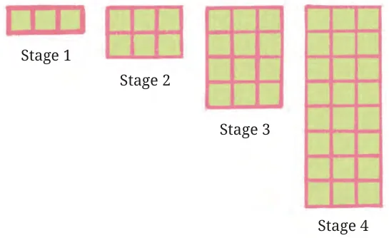
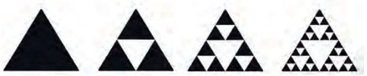
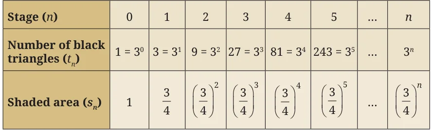
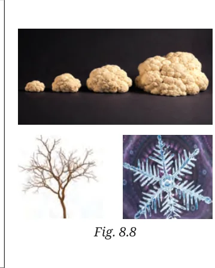
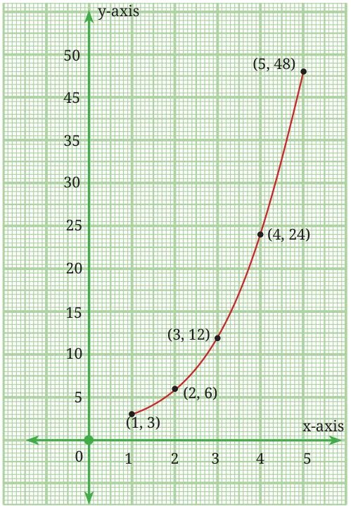
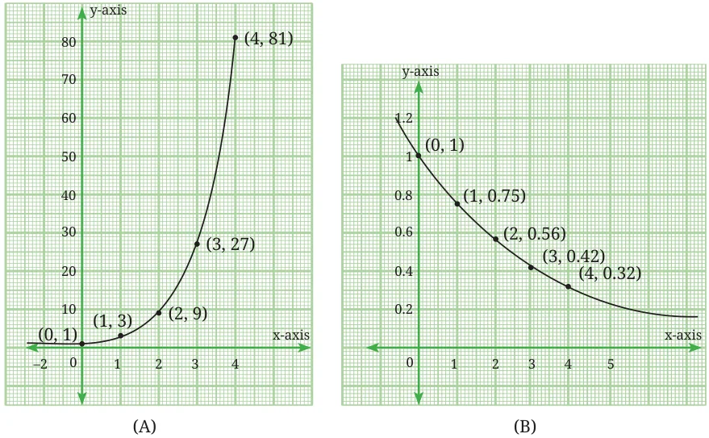

<!DOCTYPE html>
<html lang="en">
<head>
<meta charset="UTF-8">
<meta name="viewport" content="width=device-width,initial-scale=1">
<title>8.6 Geometric Progressions — Predicting What Comes Next Sequences and Progressions</title>
<meta name="description" content="Class 9 Mathematics · Predicting What Comes Next Sequences and Progressions · 8.6 Geometric Progressions">
<link rel="icon" href="data:image/svg+xml,<svg xmlns='http://www.w3.org/2000/svg' viewBox='0 0 100 100'><text y='.9em' font-size='90'>📘</text></svg>">
<link rel="stylesheet" href="../../../assets/book.css">
<link rel="stylesheet" href="https://cdn.jsdelivr.net/npm/katex@0.16.11/dist/katex.min.css" crossorigin="anonymous">
</head>
<body>
<header class="topbar">
<div class="topbar-in">
  <div class="crumb">
    <span class="c1"><a href="../../../index.html">Library</a> · <a href="../../index.html">Class 9 Mathematics</a></span>
    <span class="c2">Predicting What Comes Next Sequences and Progressions · 8.6 Geometric Progressions</span>
  </div>
  <a class="tb-btn" data-nav="prev" href="../../08-predicting-what-comes-next-sequences-and-progressions/07-exercise-8.2/index.html" title="Exercise 8.2">←</a>
  <details class="drawer"><summary class="tb-btn" title="Sections in this chapter">☰</summary>
<div class="drawer-panel"><div class="dh">Predicting What Comes Next Sequences and Progressions</div><a href="../01-introduction-to-sequences-8.1/index.html">8.1 Introduction to Sequences</a><a href="../02-explicit-rule-for-a-sequence-8.2/index.html">8.2 Explicit Rule for a Sequence</a><a href="../03-recursive-rule-for-a-sequence-8.3/index.html">8.3 Recursive Rule for a Sequence</a><a href="../04-exercise-8.1/index.html">Exercise 8.1</a><a href="../05-arithmetic-progressions-8.4/index.html">8.4 Arithmetic Progressions</a><a href="../06-sum-of-the-first-n-natural-numbers-8.5/index.html">8.5 Sum of the First n Natural Numbers</a><a href="../07-exercise-8.2/index.html">Exercise 8.2</a><a href="../08-geometric-progressions-8.6/index.html" aria-current="page">8.6 Geometric Progressions</a><a href="../09-exercise-8.3/index.html">Exercise 8.3</a></div></details>
  <a class="tb-btn" data-nav="next" href="../../08-predicting-what-comes-next-sequences-and-progressions/09-exercise-8.3/index.html" title="Exercise 8.3">→</a>
  <button class="tb-btn" data-theme-toggle title="Toggle light / dark" aria-label="Toggle light or dark theme">◐</button>
</div>
<div class="progress"><span style="width:96.7%"></span></div>
</header>
<main class="wrap">
<div class="sec-head">
  <p class="eyebrow"><a href="../index.html">Chapter 8 · Predicting What Comes Next Sequences and Progressions</a></p>
  <h1>8.6 Geometric Progressions</h1>
  <p class="sec-meta">Textbook pages 13–20 · 9 figures</p>
</div>
<article class="prose">
<p>In this section, we explore yet another special kind of sequence called a geometric progression (GP). Consider the growing pattern of squares shown in Fig. 8.6. The first four stages of the pattern are shown.</p>
<figure class="fig"><figcaption>Fig. 8.6: A growing pattern of squares</figcaption></figure>
<p>If we count the total number of green squares in the four stages of the pattern, we get the sequence 3, 6, 12, 24.</p>
<h2 id="s-think-and-reflect">Think and Reflect</h2>
<p>Can you predict the number of squares in Stages 5 and 6 of the pattern? In Stages 10, 11 and 12? In Stage 20? At any stage? How is this different from the growing pattern in Fig. 8.3?</p>
<p>We observe that at each stage, the number of green squares is doubled or is twice the number of squares in the previous stage. The number of squares at successive stages is 3, \(3 + 3 = 6\), \(6 + 6 = 12\), \(12 + 12 = 24\), …</p>
<p>These may be rewritten as</p>
<div class="mathblock"><p>3, \(3 \times 2\), \(3 \times 4\), \(3 \times 8\), … or as 3, \(3 \times 2\), \(3 \times 2^{2}\), \(3 \times 2^{3}\), …</p></div>
<p>If we treat these expressions as the terms of a sequence, we get</p>
<div class="mathblock"><p>\(t_{1} = 3\), \(t_{2} = 3 \times 2\), \(t_{3} = 3 \times 2^{2}\), \(t_{4}= 3 \times 2^{3}\)</p></div>
<p>and so on. We can write the \(n^{th}\) term as \(t_{n}= 3 \times 2n - 1\). As a recursive formula, we can write \(t_{1} = 3\) and \(t_{n} = 2tn - 1\) for \(n \ge 2\). The first six terms of the sequence are 3, 6, 12, 24, 48, 96. Each term of the sequence is obtained by multiplying the previous term by 2. This constant multiplier is also known as the common ratio of the sequence. We see that the ratios of consecutive pairs of terms are all the same.</p>
<p>\(\frac{6}{3} = \frac{12}{6} = \frac{24}{12} = \frac{48}{24} = \frac{96}{48} = 2\). Such a sequence with a common ratio is known as a Geometric Progression or GP. In general, a GP may be described in the form of a</p>
<p>sequence as a, ar, ar , ar , … , ar , where ‘a’ is the first term, ‘r’ is the</p>
<p>\(2 3 n - 1\)</p>
<p>common ratio and \(t_{n} =\) ar is the n term. Example 6: Is 1, 2, 4, 8, 16, … a geometric progression? If so, what is the common ratio? Example 7: Is 1, 3, 9, 27, 81, … a geometric progression? If so, what is the common ratio? Example 8: Is 1, \(- 1\), 1, \(- 1\), 1, … a geometric progression? If so, what is the common ratio? Example 9: Check whether the sequence 5, \(_{th} \frac{15}{4}\) , \(\frac{45}{16}\) , \(\frac{135}{64}\) , … is a geometric progression and find its n term. In the given sequence \(t_{1} = 5\), \(t_{2} = \frac{15}{4}\) , \(t_{3} = \frac{45}{16}\) , \(t_{4}= \frac{135}{64}\) Let us evaluate the ratios of consecutive pairs of terms.</p>
<p>\(n - 1\) th</p>
<div class="mathblock"><p>\(= \frac{151513}{4454}\)  \(\div 5\) =  \(\times\) = . \(\frac{t2}{t} 1\)</p><p>= 16 \(\div 4\) =16 \(\times 15\) =4 . \(\frac{t3}{t} 2\)</p></div>
<div class="mathblock"><p>\(= 64\)  \(\div 16\) =64  \(\times 45\) =4 . \(\frac{t4}{t} 3\)</p></div>
<p>The ratio of consecutive pairs of terms is a constant \(\frac{3}{4}\) . Hence the</p>
<p>given sequence is a GP with \(_{n} - _{1} a = 5\) and \(r = \frac{3}{4}\) . The \(n^{th}\) term \(= a \times r ^{(}^{n} - 1) = 5 \times\)  \(\frac{3}{4}\)  . Substitute \(n = 1\), 2, 3, … in this expression to check if you get the terms of the given sequence. Exercise: Check whether the following sequences are geometric</p>
<p>progressions and find their n terms.</p>
<p class="lead">th</p>
<ul class="qlist">
<li><span class="mk">(i)</span><span class="lt">2, 10, 50, 250, …</span></li>
<li><span class="mk">(ii)</span><span class="lt">4, \(\frac{81632}{3927}\) , , , …</span></li>
<li><span class="mk">(iii)</span><span class="lt">3, \(\frac{ - 33 - 3}{248}\) , , , …</span></li>
</ul>
<p>Exercise: Can you find a recursive rule for the formula</p>
<p>\(t_{n}= 3 \times 10\) that generates the geometric progression 3, 30, 300, 3000, … ?</p>
<p>\(n - 1\)</p>
<h3 id="s-8-6-1-fun-with-fractals">8.6.1 Fun with Fractals</h3>
<p>Recall from Grade 8 another interesting pattern as shown in Fig. 8.7. Stage 0 represents a piece of paper cut in the shape of an equilateral triangle. Let us join the midpoints of the three sides of the triangle leading to four smaller equilateral triangles. Now remove the central triangle. You will get the figure in Stage 1 with a triangular hole in the centre. Repeat the process on all three black triangles in Stage 1. This will lead to the figure in Stage 2. In a similar manner, we arrive at Stage 3 from Stage 2. The process can be continued forever! This fascinating pattern is known as the Sierpiński triangle. This is actually a fractal. We will learn more about fractals in a later grade.</p>
<figure class="fig"><figcaption>Fig. 8.7</figcaption></figure>
<p>Stage 0 Stage 1 Stage 2 Stage 3</p>
<p>Wacław Sierpiński \((1882 - 1969)\) was a Polish mathematician known for his numerous contributions to mathematics, including the Sierpiński gasket, one of the earliest and most famous examples of a fractal.</p>
<h2 id="s-think-and-reflect">Think and Reflect</h2>
<p>Observe the Sierpiński triangle and try to answer the following ­questions</p>
<ul class="qlist">
<li><span class="mk">(a)</span><span class="lt">How many black triangles are there in Stages 0 to 3 of Fig. 8.7?</span></li>
<li><span class="mk">(b)</span><span class="lt">Can you predict the number of black triangles at Stages 4 and 5?</span></li>
<li><span class="mk">(c)</span><span class="lt">Can you find a rule for the number of black triangles at the n stage?</span></li>
</ul>
<aside class="sidenote"><p>th</p></aside>
<ul class="qlist">
<li><span class="mk">(d)</span><span class="lt">Suppose the area of the triangle (that is, the black region) in Stage 0 is</span></li>
</ul>
<p>1 square unit. What is the area of the black region in Stages 1, 2 and 3? What will be the area of the black region in Stages 4 and 5? Find a rule</p>
<p>for the area of the black region at the n stage. What happens to this area as n, the number of stages, goes on increasing?</p>
<aside class="sidenote"><p>th</p></aside>
<p>We observe that the number of black triangles is 1, 3, 9 and 27 in Stages 0, 1, 2 and 3 respectively. In fact, in every stage, each black triangle is replaced with three smaller triangles at the next stage. Thus, the number of black triangles at every stage is three times the number at the previous stage. At Stages 4 and 5 the number of black triangles will be 81 and 243. Note that the sequence 1, 3, 9, 27, 81, 243, … is a GP since every successive term of the sequence can be obtained by multiplying the previous term by 3. Also, all the terms of this sequence are powers of 3:</p>
<p>\(1 = 3\) , \(3 = 3\) , \(9 = 3\) and so on. Continuing in this manner we observe that the exponent of 3 matches the stage number, as shown in Table 1. Thus,</p>
<p>the number of black triangles at the n stage of the Sierpiński triangle</p>
<aside class="sidenote"><p>th</p></aside>
<p>is given by 3 . The number of black triangles increases very quickly as the stage numbers increase. Can you explain why? What about the area of the black region? In Stage 1, the equilateral triangle at Stage 0 is divided into 4 equal parts and the central part is removed. This means that, if the black region at Stage 0 is 1 square unit, then then the black region at Stage 1 is \(\frac{3}{4}\) square units. This process is repeated on Stage 1 to arrive at Stage 2. Hence, the black region at Stage</p>
<p>2 will be \(\frac{3}{4}\) of the black region of Stage 1, which is equal to \(34 \times 34 =\)  34  .</p>
<p>Can you explain why the area of the black region at Stage n will be \(\frac{3}{4}\)   ? The area of the black region at each stage also leads to a geometric progression where every successive term of the sequence is obtained</p>
<p>by multiplying the previous term by \(\frac{3}{4}\) . Thus, while the number of black triangles increases rapidly, the total area of the triangles decreases.</p>
<p class="caption">Table 1</p>
<figure class="fig table-fig wide"></figure>
<p>The explicit formula for the number of black triangles and the</p>
<p>area of the black region at any stage is given by \(t_{n} = 3\) and \(s_{n} =\)   respectively. The recursive rules for the same are \(\frac{3}{4} t_{1} = 1\), \(t_{n}= 3 \times t_{n}_{-1}\) for \(n \ge 2\) and \(s_{1} = 1\), \(s_{n} = \frac{3}{4} \times s_{n} - 1\) for \(n \ge 2\).</p>
<p>Fractals are shapes or patterns that repeat themselves at different scales. This means that if you zoom in on a small part of a fractal, it looks similar to the whole! Fractals are found throughout nature - like in the branching of trees, in vegetables, such as cauliflower or broccoli, in the shape of snowflakes, or in the patterns of coastlines. They can be created using simple rules but can form very complex and beautiful designs. Fractals help us understand patterns in nature, and also lead us to important concepts in mathematics.</p>
<figure class="fig side-fig"></figure>
<h3 id="s-8-6-2-visualising-a-gp">8.6.2 Visualising a GP</h3>
<p>Let us revisit the growing pattern of squares in Fig. 8.6 and prepare a table that shows the number of green squares at each stage.</p>
<figure class="fig wide"></figure>
<p>Let us consider the pairs of numbers (x, \(y \frac{48}{)\) where x} represents the stage number and y the corresponding number of squares. When we plot the ordered pairs emerging from the above table, that is, (1, 3), (2, 6), (3, 12), (4, 24), (5, 48), we observe that they do not lie on a straight line! This is shown in Fig. 8.9. Similarly, when we plot the pairs of numbers (x, y) where x represents stage number and y the number of black triangles in the Sierpiński triangle we get the graph in Fig. 8.10 A. Fig. 8.10 B shows the graph where stage numbers are represented on the x-axis and the area of the black region of the stages on the y-axis. The graphs tell us that as the stage numbers increase, the number of shaded triangles increases very quickly whereas the area of black region diminishes, getting closer and closer to 0.</p>
<figure class="fig table-fig"><figcaption>Fig. 8.9: Points emerging from a GP do not lie on a straight line</figcaption></figure>
<figure class="fig table-fig wide"><figcaption>Fig. 8.10: Points emerging from a GP arising out of the stages of the Sierpiński Triangle</figcaption></figure>
<p>Here is another example in which a GP arises. Example 10: A ball is dropped from a height of 24 feet above the</p>
<p>ground. Each time the ball bounces up to ( \(\frac{3}{4}\) ) of its previous height.</p>
<aside class="sidenote"><p>th</p></aside>
<ul class="qlist">
<li><span class="mk">(a)</span><span class="lt">Can you write the sequence of numbers obtained from the heights</span></li>
</ul>
<p>attained by the ball in five successive bounces?</p>
<ul class="qlist">
<li><span class="mk">(b)</span><span class="lt">How many bounces are required for the ball to remain below a</span></li>
</ul>
<p>height of \(\frac{1}{6}\) of the original height from which it was dropped? The sequence of maximum heights attained by the ball after each bounce is: First bounce: \(24 \times 0.75 = 18\) feet Second bounce: \(18 \times 0.75 = 13.5\) feet Third bounce: \(13.5 \times 0.75 = 10.125\) feet Fourth bounce: \(10.125 \times 0.75 = 7.59375\) feet Fifth bounce: \(7.59375 \times 0.75 = 5.695\) feet Sixth bounce: \(5.695 \times 0.75 = 4.27125\) feet Seventh bounce: \(4.27125 \times 0.75 = 3.2034375\) feet</p>
<figure class="fig table-fig"><figcaption>Fig. 8.11</figcaption></figure>
<p>The sequence of heights forms a GP with \(a = 18\) and \(r = 0.75\) (or \(\frac{3}{4}\) ), that is, 18, 13.5, 10.125, 7.594, 5.695, 4.27125, 3.2034375, … . We see that after the seventh bounce the ball remains below \(\frac{1}{6}\) of the height at which it started.</p>
<figure class="fig"></figure>
<ul class="qlist">
<li><span class="mk">1.</span><span class="lt">Find the 12 term of a GP with common ratio 2, whose 8 term is</span></li>
</ul>
<p>th th</p>
<p>192.</p>
<ul class="qlist">
<li><span class="mk">2.</span><span class="lt">Find the 10 and n terms of the GP: 5, 25, 125, … .</span></li>
</ul>
<p>th th</p>
<p>*3. A sequence is given by the recursive rule \(t_{1} = 2\), \(t_{n}_{+1} = 3t_{n} - 2\) for \(n \ge 1\). Which term of the sequence is 730?</p>
<ul class="qlist">
<li><span class="mk">4.</span><span class="lt">Which term of the GP: 2, 6, 18, … is 4374? Write the explicit formula</span></li>
</ul>
<p>as well as the recursive formula for the n term.</p>
<aside class="sidenote"><p>th</p></aside>
<ul class="qlist">
<li><span class="mk">5.</span><span class="lt">A ball is dropped from a height of 80 metres. After hitting the</span></li>
</ul>
<p>ground, it bounces back to 60% of the height from which it fell. It continues bouncing in this way - each time rising to 60% of the previous height.</p>
<ul class="qlist">
<li><span class="mk">(i)</span><span class="lt">What height does the ball reach after the 5 bounce?</span></li>
</ul>
<aside class="sidenote"><p>th</p></aside>
<ul class="qlist">
<li><span class="mk">(ii)</span><span class="lt">What is the total vertical distance the ball has travelled by</span></li>
</ul>
<p>the time it hits the ground for the 6 time?</p>
<aside class="sidenote"><p>th</p></aside>
</article>
<nav class="pager"><a class="" data-nav="prev" href="../../08-predicting-what-comes-next-sequences-and-progressions/07-exercise-8.2/index.html"><span class="dir">← Previous</span><span class="t">Exercise 8.2</span><span class="ch">Predicting What Comes Next Sequences and Progressions</span></a><a class="nx" data-nav="next" href="../../08-predicting-what-comes-next-sequences-and-progressions/09-exercise-8.3/index.html"><span class="dir">Next →</span><span class="t">Exercise 8.3</span><span class="ch">Predicting What Comes Next Sequences and Progressions</span></a></nav>
</main><footer class="site">Generated from the source textbook PDFs · text, figures and exercises belong to their respective publishers.</footer><script defer src="https://cdn.jsdelivr.net/npm/katex@0.16.11/dist/katex.min.js" crossorigin="anonymous"></script>
<script defer src="https://cdn.jsdelivr.net/npm/katex@0.16.11/dist/contrib/auto-render.min.js" crossorigin="anonymous"
  onload="renderMathInElement(document.body,{delimiters:[
    {left:'\\(',right:'\\)',display:false},
    {left:'$$',right:'$$',display:true},
    {left:'\\[',right:'\\]',display:true}],throwOnError:false,ignoredTags:['script','noscript','style','textarea','pre','code']})"></script>
<script src="../../../assets/book.js"></script>
</body>
</html>
